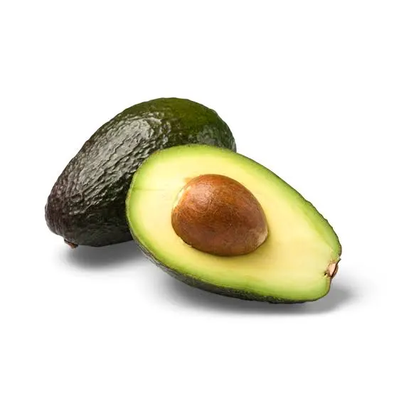
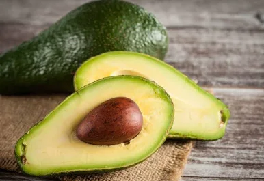
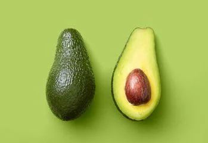

Alpukat, yang juga dikenal sebagai alligator pear atau avocado pear (Persea americana), adalah pohon hijau abadi dari keluarga laurel (Lauraceae). Tanaman ini berasal dari Amerika dan pertama kali dibudidayakan di Mesoamerika lebih dari 5.000 tahun yang lalu. Alpukat dihargai karena buahnya yang besar dan memiliki kandungan minyak yang tinggi.[3] Pohon ini kemungkinan berasal dari dataran tinggi yang menghubungkan Meksiko bagian tengah-selatan dan Guatemala.[4][5] Secara alami, pohon alpukat tumbuh di wilayah yang membentang dari Meksiko hingga Kosta Rika
Alpukat secara botani dikategorikan sebagai beri besar yang mengandung satu biji besar di dalamnya.[7] Penelitian genom alpukat menunjukkan bahwa evolusinya dipengaruhi oleh peristiwa poliploidi dan bahwa varietas komersialnya berasal dari hibrida. Pohon alpukat sebagian dapat melakukan penyerbukan sendiri, tetapi umumnya diperbanyak melalui teknik pencangkokan untuk mempertahankan kualitas buah yang konsisten.[8] Saat ini, alpukat dibudidayakan di berbagai negara dengan iklim tropis dan Mediterania.[4] Hingga tahun 2023, Meksiko menjadi produsen alpukat terbesar di dunia, menyumbang 29% dari total panen global yang mencapai 10,5 juta ton.
Buah alpukat dari varietas domestik memiliki daging berwarna hijau keemasan yang lembut dan bertekstur mentega saat matang. Bergantung pada kultivarnya, kulit alpukat bisa berwarna hijau, coklat, ungu, atau hitam, dengan bentuk yang dapat menyerupai buah pir, telur, atau bulat. Untuk keperluan komersial, buah ini biasanya dipanen dalam keadaan belum matang dan dibiarkan matang setelah dipanen. Kepadatan nutrisi dan kandungan lemak tinggi dalam daging alpukat menjadi nilai tambah dalam berbagai jenis masakan, termasuk diet vegetarian
Di daerah produksi utama seperti Chili, Meksiko, dan California, kebutuhan air yang tinggi dalam budidaya alpukat memberikan tekanan besar terhadap sumber daya lokal.[10] Produksi alpukat juga dikaitkan dengan berbagai dampak lingkungan dan sosial, termasuk deforestasi serta isu hak asasi manusia akibat sebagian kendali produksi di Meksiko yang dikuasai oleh kelompok kejahatan terorganisir.

Alpukat, yang juga dikenal sebagai alligator pear atau avocado pear (Persea americana), adalah pohon hijau abadi dari keluarga laurel (Lauraceae). Tanaman ini berasal dari Amerika dan pertama kali dibudidayakan di Mesoamerika lebih dari 5.000 tahun yang lalu. Alpukat dihargai karena buahnya yang besar dan memiliki kandungan minyak yang tinggi.[3] Pohon ini kemungkinan berasal dari dataran tinggi yang menghubungkan Meksiko bagian tengah-selatan dan Guatemala.[4][5] Secara alami, pohon alpukat tumbuh di wilayah yang membentang dari Meksiko hingga Kosta Rika
Alpukat secara botani dikategorikan sebagai beri besar yang mengandung satu biji besar di dalamnya.[7] Penelitian genom alpukat menunjukkan bahwa evolusinya dipengaruhi oleh peristiwa poliploidi dan bahwa varietas komersialnya berasal dari hibrida. Pohon alpukat sebagian dapat melakukan penyerbukan sendiri, tetapi umumnya diperbanyak melalui teknik pencangkokan untuk mempertahankan kualitas buah yang konsisten.[8] Saat ini, alpukat dibudidayakan di berbagai negara dengan iklim tropis dan Mediterania.[4] Hingga tahun 2023, Meksiko menjadi produsen alpukat terbesar di dunia, menyumbang 29% dari total panen global yang mencapai 10,5 juta ton.
Buah alpukat dari varietas domestik memiliki daging berwarna hijau keemasan yang lembut dan bertekstur mentega saat matang. Bergantung pada kultivarnya, kulit alpukat bisa berwarna hijau, coklat, ungu, atau hitam, dengan bentuk yang dapat menyerupai buah pir, telur, atau bulat. Untuk keperluan komersial, buah ini biasanya dipanen dalam keadaan belum matang dan dibiarkan matang setelah dipanen. Kepadatan nutrisi dan kandungan lemak tinggi dalam daging alpukat menjadi nilai tambah dalam berbagai jenis masakan, termasuk diet vegetarian
Di daerah produksi utama seperti Chili, Meksiko, dan California, kebutuhan air yang tinggi dalam budidaya alpukat memberikan tekanan besar terhadap sumber daya lokal.[10] Produksi alpukat juga dikaitkan dengan berbagai dampak lingkungan dan sosial, termasuk deforestasi serta isu hak asasi manusia akibat sebagian kendali produksi di Meksiko yang dikuasai oleh kelompok kejahatan terorganisir.

PEMBAYARAN DI TEMPAT / COD
hanya untuk jakarta, bekasi, dan depok
Potongan Ongkir Rp. 5000,-
UNTUK PEMBELIAN VIA TRANSFER